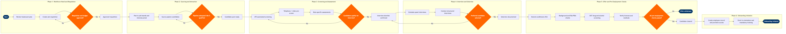

| Step | L4 Step Name | KPI / Target | Pain Point / Risk | Gate |
|---|---|---|---|---|
| 1.1 | Review headcount plan and identify vacancy | Requisition-to-plan alignment rate ≥95%; headcount request raised within 5 business days of vacancy identification | SAP SuccessFactors Workforce Planning module is not integrated with crew scheduling or flight operations staffing models — frontline vacancy data (pilots, cabin crew) must be manually cross-referenced, causing 5–10 day lag in requisition initiation | |
| 1.2 | Create and submit job requisition | Requisition submitted within 3 business days of headcount approval | Job description templates in SAP SuccessFactors are frequently outdated for technical aviation roles (avionics technician, line maintenance engineer) — manual SME review adds 2–4 days to requisition creation | |
| 1.3 | Approve requisition and confirm budget | Approval cycle time ≤3 business days; 100% of approved requisitions within sanctioned FTE budget | SAP S/4HANA Finance month-end close (3-day window) freezes cost centre commitments — operational hiring requisitions submitted during close are delayed, disrupting crew and maintenance staffing timelines | ⚠ |
| 2.1 | Post vacancy to internal and external channels | Internal application rate ≥20% for non-entry-level roles; posting live within 1 business day of requisition approval | SAP SuccessFactors Career Site apply-flow is not mobile-optimised — pilot and cabin crew candidates applying via mobile devices report high abandonment rates, reducing application conversion vs. competitor portals | |
| 2.2 | Source passive candidates via direct outreach | Passive candidate pipeline of ≥3 qualified prospects per requisition within 10 business days of posting | Global commercial pilot shortage (ICAO forecasts 50,000+ deficit by 2030) makes passive sourcing for ATP-rated First Officers intensely competitive — response rates on LinkedIn Recruiter InMail for pilot roles average <15%, well below the 35% cross-industry benchmark | |
| 2.3 | Assess pipeline adequacy and decide sourcing strategy | Minimum 5 qualified applicants before screening commences; agency engagement escalation rate ≤15% of requisitions | SAP SuccessFactors does not enforce a preferred supplier list for recruitment agencies — when pipeline fails, hiring managers independently engage agencies at non-negotiated rates, inflating cost-per-hire for technical roles by 30–50% | ⚠ |
| 3.1 | Automated ATS screening and shortlisting | ATS screen-to-shortlist ratio ≤5:1; screening completed within 2 business days of application close | SAP SuccessFactors AI screening does not recognise FAA-standard licence abbreviations (ATP, A&P, IA) and ICAO type rating codes — qualified pilot and maintenance candidates are incorrectly filtered out, requiring manual review of up to 30% of rejections | |
| 3.2 | Conduct telephone or video pre-screen interview | Pre-screen completed within 5 business days of shortlisting; candidate pass rate 50–70% | HireVue asynchronous video interviews have significantly lower engagement rates with experienced pilot and senior maintenance candidates who expect direct recruiter interaction — completion rates for these cohorts are 20–25% below junior role benchmarks | |
| 3.3 | Administer role-specific skills and aptitude assessments | Assessment completion rate ≥85%; cognitive benchmark score ≥65th percentile for technical roles; pilot sim check pass rate reported within 5 days | Simulator assessment slots at CAE and FlightSafety International facilities cost $3,000–$5,000 per candidate and must be booked 4–6 weeks in advance — scheduling constraints extend pilot time-to-hire by 3–6 weeks vs. non-technical roles | |
| 3.4 | Review assessments and finalise interview shortlist | Interview shortlist delivered to hiring manager within 3 business days of assessment completion | Inconsistent scoring rubrics across business units in SAP SuccessFactors create EEOC/OFCCP audit risk — selection decisions for cabin crew base hiring lack standardised documentation, exposing the airline to disparate impact claims | ⚠ |
| 4.1 | Schedule panel interviews and notify participants | Interviews scheduled within 5 business days of shortlist approval; candidate no-show rate ≤5% | Outlook-to-SuccessFactors calendar sync fails for interviewers on crew scheduling systems — operational disruptions (IROPS, maintenance delays) cause same-day cancellations that are not automatically reflected in SuccessFactors, requiring manual rescheduling | |
| 4.2 | Conduct structured panel interviews | 100% of interviews completed with documented scorecards; inter-rater reliability ≥0.70 (Krippendorff's alpha) | Operational interviewers (crew planning managers, maintenance supervisors) frequently bypass SAP SuccessFactors scorecard entry citing system complexity — undocumented decisions create material gaps in EEOC record-keeping required for airlines with federal contracts | |
| 4.3 | Debrief panel, rank candidates, and select preferred hire | Debrief completed within 2 business days of final interview; offer decline reserve conversion rate ≥60% | SAP SuccessFactors does not support structured calibration sessions for multi-site roles — regional hiring panels for cabin crew bases (e.g., BWI vs. MDW) use inconsistent evaluation norms, creating equity and compliance risk | ⚠ |
| 5.1 | Generate and extend conditional offer letter | Offer extended within 2 business days of selection decision; offer acceptance rate ≥85% | SAP SuccessFactors salary band guardrails block above-band offers without a formal exception workflow — for experienced First Officers and A&P mechanics competing with legacy carrier packages (Delta, United), the exception approval cycle (5–7 days) causes candidate drop-off to competitors | |
| 5.2 | Initiate background check and FAA PRIA records request | Background check completed within 7 business days; FAA PRIA response within 30 days (statutory maximum); 100% compliance with Air Carrier Access Act record-keeping | FAA PRIA requests for internationally certified pilots (JAA/EASA licence holders converting to FAA ATP) require manual coordination with foreign civil aviation authorities — average response time is 45–60 days vs. the 30-day statutory target, blocking hire completion | |
| 5.3 | Conduct DOT-mandated drug and alcohol screening | Drug screen specimen collected within 3 business days of offer acceptance; 100% compliance rate for safety-sensitive roles (pilots, cabin crew, dispatchers, mechanics) | DOT 49 CFR Part 40 requires direct-observation collection for certain re-hire categories — the LabCorp DOT collector network has limited presence in smaller airline base cities (ISP, BDL, MHT), requiring candidates to travel, causing 2–5 day delays and candidate attrition | ⚠ |
| 5.4 | Verify licences, certificates, and medical fitness | 100% credential verification completed before Day 1; zero compliance exceptions at FAA CHDO audit; credential expiry alerts configured in SuccessFactors | FAA IACRA public lookup does not have an API integration with SAP SuccessFactors — credential data must be manually transcribed, creating data entry error risk; errors discovered at FAA Certificate Holding District Office (CHDO) audit result in regulatory corrective action | ⚠ |
| 6.1 | Create employee record and provision system access | System access provisioned and verified by 08:00 on Day 1; first-day access failure rate ≤1% | ServiceNow-to-SuccessFactors integration triggers provisioning only on a nightly batch — new hire records created less than 48 hours before the start date miss the batch window and arrive on Day 1 without access, requiring manual IT escalation that averages 4–6 hours to resolve | |
| 6.2 | Enrol new hire in orientation and mandatory training | 100% of mandatory Day-1 training assignments loaded before start date; regulatory training completion ≥95% within first 30 days; zero FAA compliance exceptions at training audit | SAP SuccessFactors LMS does not auto-assign FAA-required recurrent training curricula (FAR Part 121 initial, emergency equipment, CRM) when a new employee record is created for safety-sensitive roles — manual curriculum assignment is required and is frequently missed during high-volume new hire cohorts, creating FAA Part 121 compliance gaps |